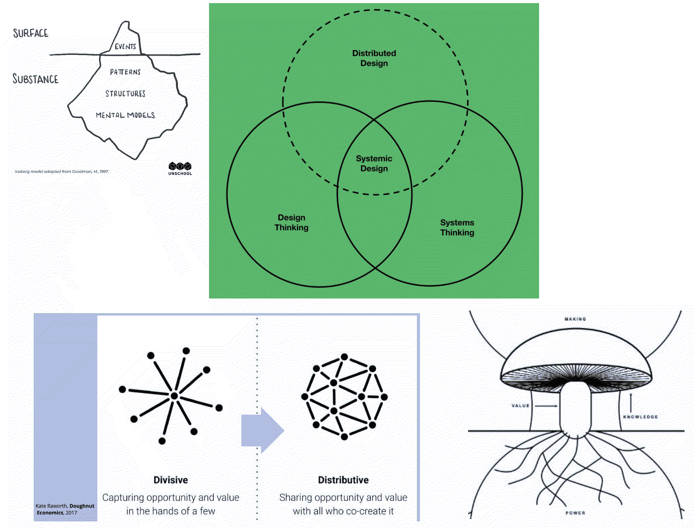
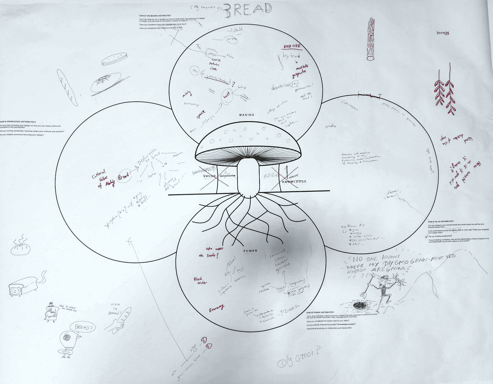
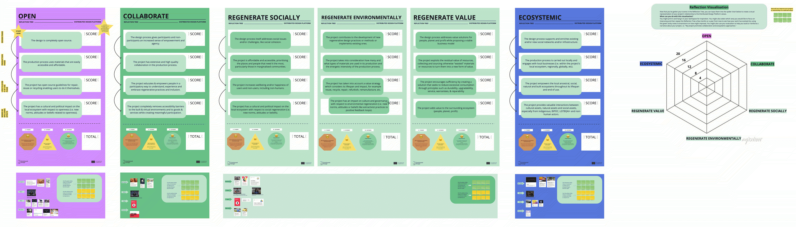

¶
🗓 Week 23 / 12 - 14 april 2023
distributed design¶
with Olga Trevisan and Sally Bourdon
this course was led my two participants of the Disstrbuted Design Platform (DDP), a company that is directed to support and encourage young designers to become more open-source and successful in their progress.
what is distributed design and techniques to implement it?¶
12. april
history of distributed design
from
design thinking: we are creating something with the user in the back of our minds
to
system thinking: we are a design approach that breaks down contexts into smaller pieces @ Iceberg model by goodman, M., 1997 @ table model by here, you start thinking about the materiality of the things you have and the things that compose it. this approach tries to vizualize the things we do not see
to the
musshroom model: there is also interconnectiivitty bettween the things that we are producing. in a iceberg model you break things down but you ignore their interdependencies. In the mushroom model instead, things are being brooken down but they do not exost in isolation but stands in relation to other mushrooms/ other thinking
this comes together in the idea of a distributive systems. @Kate Raworth (donough model) the idea here is that we are not just distributing things and its
to the
“new mushroom model” who tries to vizualize everything! not just recognizing the parts (table model) or the various systems (mushroom model) but rather vizualize the distributed making, that is held by distributed value, and distributed knowledge and is built on distributed power. there is interconnectivity within these and they all have interactions with each other.
systemic design is where design thinking, system thinking and distributed design are overlapping!
what is the distributed design platform (DDP)?
trying to be a space for young designers to exchange though and work and think about the pluralities of distribution. a global community based in fablab that has members all over the placce within europe
DDP has four key-values:
1. open
2. collaborate
3. regenerae
4. being ecosystemic
this order makes sense because the prerequisite is being open (foundational), getting involved, then you can collaborate with other kinds of actors and hinking about their power and agency (human and non-human), once you are capable of collaboraing, you are able to take responsibility, to give back, to regenerate (sustaining systems is not enough but we have to regenerate @ancestral wisdoms). And then you can think about a wider context, about the other parts of the value change and be ecosystemic in ways that might not be directly linked to your oown practice.

what do they actually do?
supporting your creators (creative talents) and envisioning fuure design practices, giving classes and providing courses and content about how to be a creative talent in the market that exists.
what does it mean to distribute making, knowledge, power and value?
we will deal with understanding values and how we can use values in our design processes and will be working with and about circular communitites
mushroom model in action¶
in groups we come up with a service or a product (we chose bread) and do go through the mushroom model with “bread” as object of inquiry.

Learning skills: it was important to listen and built on the thoughts on the others.
through this we came up with a chain of thoughts and ideas that I would not have been able to consrtruct myself.
In a second step it was important to comprehend another mushroom-model in such way that I could afterwarsd explain their progress to my team.
thus my learning skills in bullet points:
• listening
• following on other people's thoughts
• comprehending other system-workings in short time
• presenting other system-workings to my own team comprehensively
Dynamics: the five of us were equally engaged in the conversation about bread and its four poles (making, value, knowledge, power)
Interactions: my group depended on me to give them account on other team's system-workings
in the same way that I depended on them to understand what system-workings they were exploring.
the DDP tree¶
13. april
today we worked with the reflection tree that the DDP people have created. this is a technique to reflect on ones project and discover potentialities where to improve. we first individually choose a project and rated the given categories and what we thought would our progress in that topic be so far. then we exchangde thoughts and discussed in groups about our project’s values and where and how to potentially improve.

I choose to reflect on my collaborative projectt MOC and found out quit some interesting points to work with, on, about…
open yes, all information and codes are accessible in our repo yet it remains a accesssibility question of who is able to (monetary) and (skillwise) is able to rebuilt the MOC stamp and its system. Yet the project is made by and for the content of the users so it might no be an important value for us atm. LESS IMPORTANT
collaborate we are strongly building on each other developing the idea and system yet especially the concept will only work when people engage, use and give their voice to the MOC. IMPORTANT
regenerative socially the MOC aims to give space to BIPOC people tto express and non-BIPOC people to learn and reflect about inherited colonialism and traumata. IMPORTANT
regenerative environmentally we have discussed the ink of the stamp and that we want it to be biodegradable yet for the rest of the materials of the stamp neither for the workings and hosing of the online-system have we considered its environmental footstep. we dont want to make this a main-topic to the MOC as it is about a sociatal issue. Interesting here was the post-conversation in which Amanda mentioned that talking about colonial heritage and giving back room to indiginous values and cultures inherently is environmentally regenerative as these knowledge have always been more in tune with nature than the capitalist whiteness that oppressed. thus by adressing white oppression, we kind of adress the topic of environmentalism. MEDIO IMPORTANT
ecosystemic our project deals with a holistic sense of perceiving society and its histories. we proposes a new social network and infrastructure in which pins on a interactive map allow people to engage with the colonial realities we live in. VERY IMPORTANT
Learning skills: today we worked individually and exchanged thoughts with a group or partner.
in my case, I talked with one person first and we found a lot of patterns in each other's situations
eventhough our projects were not related.
later on, we went to the roof terrace and there exchanged within the groups the processes we went through with our partners.
I learned that just my view and my mirroring back what I hear opens up new doors to the listeners.
It was interesting because we went into the talk saying that we would need to work on certain values
and after sharing all of us could actually see that these values were already (partly) discussed.
often also not all values concerned our project as it was dependent on the projects which values were of importance.
thus my learning skills in bullet points:
• giving feedback
• receiving feedback
• choose your battle - for each project there are main values and background valued
Dynamics: my partner Claudia is a very food friend of mine and we had a easy and straightforward communication.
Later on I felt my energies very low and I think that actually helped in the situation
because I am often the one talking first and fast and loud
because I have something to say to anything.
It was good to take a step back firs, look, listen,
and then repeat what I heard before engaging in a talk myself.
Interactions: smooth and subtle. It remained throughout the day an individual activiy for me
even if we were talking and exchanging with people.
Somehow, everyone was very much in their own project and head.
reflecting on our values - framework for my work¶
14. april
to round up this course we go back to the DDP values that we were introduced to in the beginning. we focus on three related ones and talk about what they mean and what their implementation entails.
CURIOUSITY (to be curious):
• to accept that information is always incomplete
• to develop a desire to discover
• to be unafraid of the unknown
• to create narratives anew and anew
• to practice adaptive thinking
• to explore language
• to accept the unpredictable and search for it
(SOCIAL) JUSTICE (to be just):
• to look closely even if you are at the top of a hierarchy
(which often means that one does not see the unjustice at stake)
• to practice not to take things, situations, relations for granted just because we have them learned them in one way
COLLABORATION (to collaborate):
• to take the chances at hand to collaborate
• to create chances for other to collaborate
• to reflect on ones role and power and
how that might affect the situations one is engaging in
• reflect on the positions at play in the system we take part in